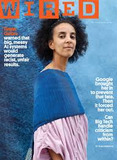

Timnit Gebru is an Ethiopian computer scientist. She gained her Bachelor of Science and Master of Science degrees in electrical engineering and a PhD in computer vision from Stanford. In 2020, she and a few colleagues wrote a paper examining large language models (LLMs). Google replied with asking for 5/6 writers names removed from that paper, which upset Gebru and others. Gebru sent an email to several people who worked in Google Brain saying that the company silenced marginalized voices and called Google's internal diversity programs a waste of time.

Timnit Gebru is underrepresented in technology because she speaks out about algorithmic bias at big companies. She speaks out to change and challenge the demographics of tech and AI. This is significant because there is an exceptionally small percentage of Black female researchers and managers in big tech companies like Google. She works to do this because she fought against Google trying to retract a paper she co-wrote about racial and gender biases in AI. She overcame this challenge after being fired by Google over this paper. She started her own nonprofit company Black in AI that explores racial bias in AI.
Another challenge she faced was being a Black woman in an industry of mostly white men. This makes it extremely hard to succeed when only 14% of the employees at Google are women. She was immediately fired from Google following her publishing of the racial bias article. This shows that researchers don't want to even address her feelings and what is currently happening in tech today. This makes it extremely hard for any change to happen when nobody will even listen. This is also why she started her Black in AI company, to give people a voice and to give them credit for their work. She wants people to be represented and to feel like they can make a difference, instead of their voice being silenced like hers was at Google.
Timnit Gebru is an Ethiopian female computer scientist who used her struggles and background to help other people. She did this by recognizing that Artificial Intelligence (AI) can be unfair if they are trained on biased social data. In one of her most well-known studies, she found that some facial recognition technologies make more mistakes if they're tasked with identifying women and people with darker skin.
Her contributions to recognizing something that needs to be fixed and therefore diversifying artificial intelligence connect strongly to our pillar of sociotechnical thinking, which has a focus on how technology affects real people in everyday life rather than whether the code functions or not. Her research is incredibly important because she changed things for people who didn't get to use technologies that other people get to use every day, like Face ID on cell phones, which relies on the same kinds of AI systems that she studied and fixed for minority groups. Gebru is one reason why tech companies are more careful about testing and designing these tools, so that they work for a wider range of people. In short, her work helps to make modern technology more responsible and reliable for everyone.
With the help of Timnit Gebru's contributions, we can see her discoveries changing the landscape of AI safety. One way that we see her work being used is by helping to create mandatory labels for the parts of a project that AI helped create. This is a possibility because of her findings in her research paper, Datasheets for Datasets, which argues that AI models should no longer be allowed to operate as bias machines based on the limited training data used. Similar to how the FDA requires all food manufacturers to list ingredients, calories, and allergens to protect consumers, the future of AI will require developers to provide standardized documentation detailing exactly which information was created by AI. The data labels would give people more certainty behind what was used as the training data, allowing users to spot potential biases before the technology is widely used. In the future, our group predicts that these transparency frameworks will become federal law, forcing big tech companies to be completely open about how their algorithms are trained. Ultimately, it will create a safer digital world where AI used in everyday life, like hiring software or facial recognition, is held accountable and built fairly for everyone.
One of our other top options was Larissa Suzuki who also had a background with Google. She is an advocate for women in STEM as well as neurodivergent computer scientists, like herself. She has autism and ADHD, which gives her the ability to hyper focus on her tasks and think more outside the box compared to her coworkers. However, we chose Gebru because of the scandal in her story, which we found interesting. We also agreed that we would be able to have more passion for something that was completely wrong compared to someone who is advocating for a great cause. These contributions connect directly to sociotechnical thinking in informatics, which understands that technology is closely linked with human social systems. Gebru's work demonstrates how a simple line of code can lead to significant real-world outcomes, like wrongful arrests. By founding the Distributed AI Research Institute (DAIR), she created a space where research is guided by the communities most impacted by technology. Her approach also incorporates design thinking by considering who a product excludes from the start. Today, her legacy ensures that tech companies use diverse datasets so that technology can accurately identify users regardless of skin color.
For more information click the links below: